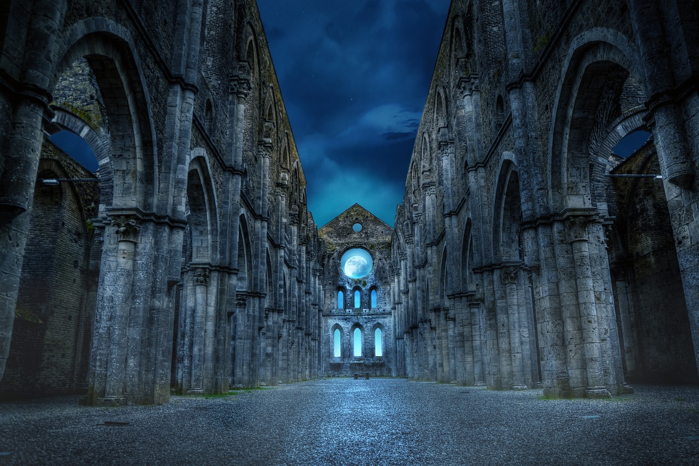

Adanosův chrám
Nikdo krom kněží neví, jak starý Adanosův chrám je, všichni jen ví, že je opravdu starý.
Adanos, bůh vody a rovnováhy je jeden ze starších bohů, kteří byli u stvoření světa, nebo tak se to aspoň vypráví.
Jeho kněží se do světských záležitostí nevmněšují, jen pokud by mělo dojít k vážnému narušení rovnováhy,
posledním takovým případem byla Velká Válka před více než 150 lety.
Adanosův chrám nestojí na kopci ani na skále. Není to místo, které by na poutníka křičelo svou velikostí nebo vznešeností.
Z dálky působí spíš jako shluk nízkých, kamenných budov, splývajících s okolní krajinou.
Střechy jsou prosté, z tmavé břidlice, a zdi stavěné z hrubého kamene vytěženého přímo z okolí.
Kámen, po staletí opracovávaný větrem a vodou, místy porůstá mechem a lišejníky. Celý komplex jakoby do krajiny patřil odjakživa.
Chrám sám stojí částečně nad řekou a částečně na jejích březích. Právě voda je jeho srdcem a duší.
Řeka protéká přímo hlavní síní chrámu – širokou, strohou lodí, kde se netrénuje, nekřičí ani nebojuje.
Zde se pouze sedí, rozjímá a naslouchá tichu — nebo sám sobě. Voda v této části chrámu plyne klidně,
bez jediného víru, čistá a tichá. Říká se, že kdo do ní nahlédne dostatečně dlouho, může spatřit i to, co by raději neviděl.
Za chrámem samotným ale voda nabírá sílu. Tam, kde je vybudovaný starý jez, burácí řeka s takovou silou, že přehluší i vlastní myšlenky.
Uvnitř chrámu panuje zvláštní atmosféra. Vzduch voní bylinami — levandulí, mátou a dalšími rostlinami, které kněží používají při očistě vody.
Zdi jsou vlhké, místy tmavé od staletého dechu řeky. Z potůčků a kanálků, které protékají téměř každou místností, je slyšet ustavičné zurčení.
Na některých místech se voda jen tiše plazí, jinde kapka po kapce stéká do kamenných nádržek.
V nočních hodinách se tohle neustálé kapání stává zkouškou trpělivosti a vnitřního klidu — jen málo nezasvěcených dokáže v chrámu skutečně odpočívat.
Chrám je starý. Velmi starý. Chodby jsou spletité, plné tajných průchodů a skrytých dveří.
Říká se, že pod chrámem se nachází celý labyrint chodeb — obytné prostory kněží, staré krypty, a především spletitý kanalizační systém,
který chrámem vede vodu jako krev tělem.
Bojovníci řádu, paladini a mniši trénují mimo hlavní chrámové prostory. Venkovní nádvoří je přístupné komukoliv —
poutníkům, vesničanům i těm, kdo si přichází pro vodu, o níž se říká, že léčí tělo i ducha. Voda je zde zdarma. Vždy byla. Vždy bude.
Řád samotný působí na okolní svět s tichým respektem - lidé z okolních vesnic se kněžím a bojovníkům Adanosova chrámu klaní spíše s úctou než se strachem.
Jen zlé jazyky občas připomínají staré rčení:
„Řeka v chrámu ti ukáže tvář, jakou sám neznáš.“
A někteří, co hleděli do hladiny příliš dlouho… už prý nikdy nebyli stejní.
Dobrodružství, která se zde odehrála:
Adanosův chrám na mapě
Adanosův chrám - hlavní loď s otevřenou střechou